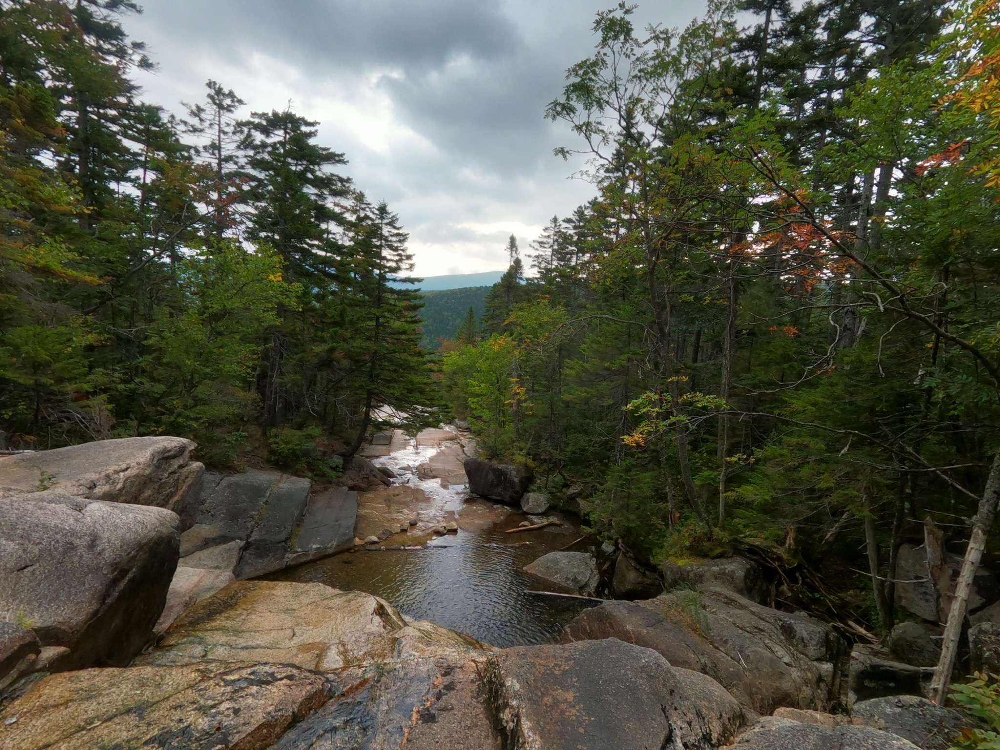
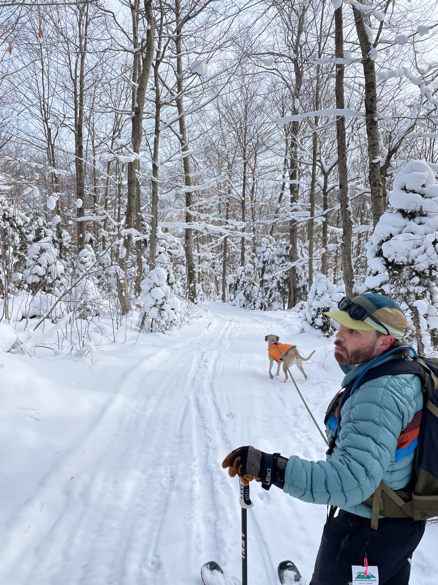
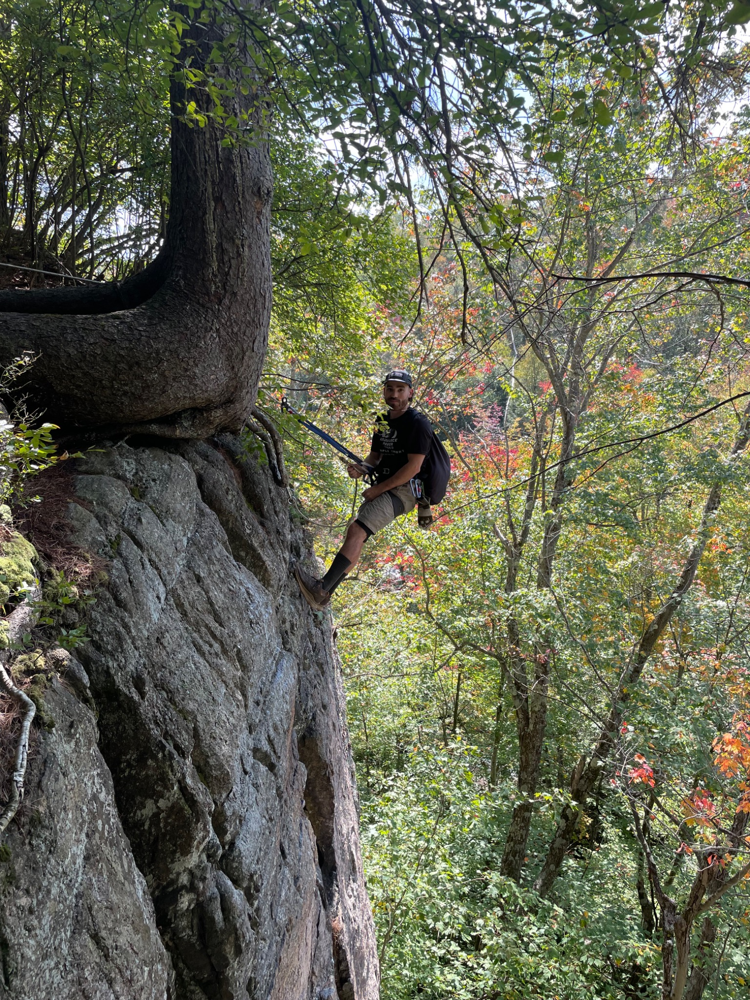

Find gear by
where it takes you.
This isn't a storefront. It's a growing library of equipment I actually use, organized around the activities it belongs to. One piece can live in more than one place—because a shell doesn't stop being useful when the season changes.
EXPLORE BY ACTIVITY
Pick a direction.

Hike & CampPacks / sleep / shelter / camp

Ski & TourSkis / boots / layers / safety

PaddleKayak / canoe / SUP / river safety

ClimbHardware / shoes / ropes / systems

Run & MoveTrail shoes / vests / watches / lights

Essentials & OtherApparel / dog gear / gadgets / tools
FROM THE GEAR ROOM
Latest reviews.
Loading published reviews from Basecamp…